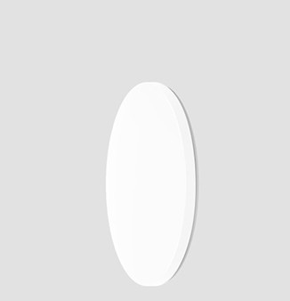
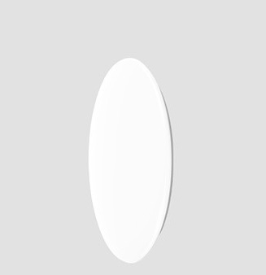
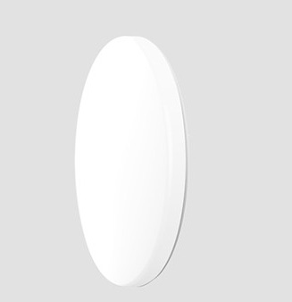
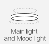
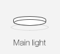
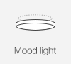
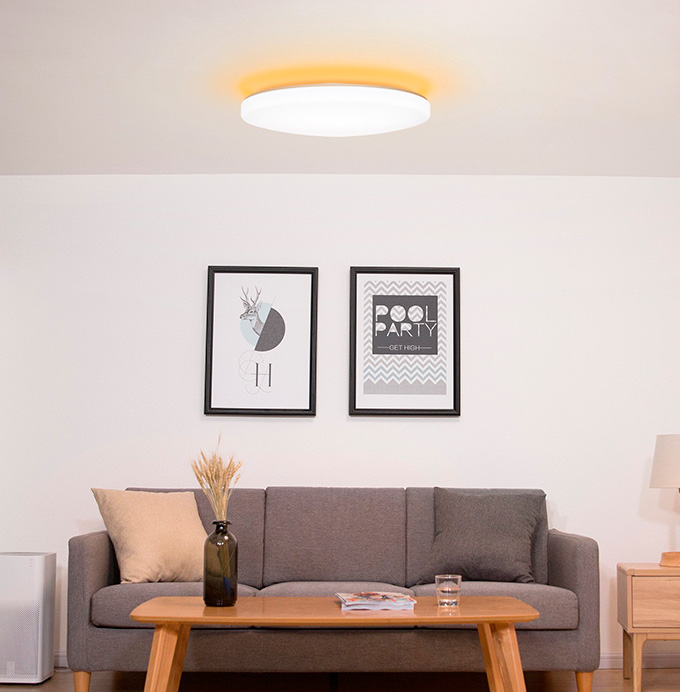
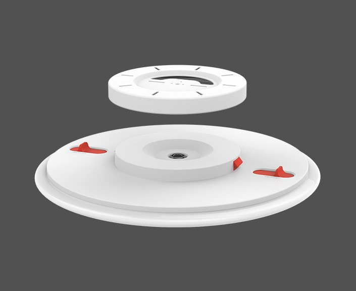
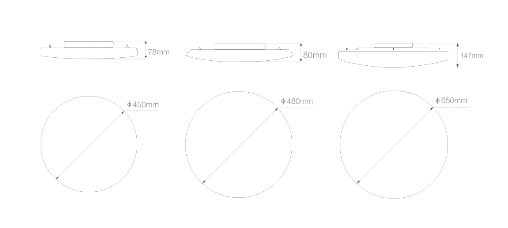

<div class="row galaxy">
    <div class="col-md-10 col-md-offset-1 col-lg-8 col-lg-offset-2 content">
        <section class="row galaxy_content_1">
            <div class="col-xs-12 col-sm-6 col-md-6 col-lg-6">
                <div class="text">
                    <h1>Yeelight Galaxy LED Ceiling Light</h1>
                    <h2>Потолочный светильник </h2>
                    <p>Большая площадь освещения | Регулируемая цветовая температура и яркость | Защита от пыли и
                        насекомых
                    </p>
                </div>
            </div>
            <div class="col-xs-12 col-sm-6 col-md-6 col-lg-6" style="padding: 0">
                
            </div>
        </section>

         <section class="row luna_content_15">
            <div class="col-xs-12 col-sm-12 col-md-10 col-md-offset-1 col-lg-10 col-lg-offset-1 align-center">
                <div class="text">
                    <h2>Размеры для любых комнат</h2>
                    <p>Лампа выпускается в нескольких размерах, что позволяет выбрать именно ту, которая наиболее
                        эффективно
                        сможет освещать ваше помещение</p>
                </div>
                <div class="row align-center">
                    <div class="col-xs-12 col-sm-4 col-md-4 col-lg-4">
                        
                        <h3>450×78mm / 32Вт</h3>
                        <p>Для небольших гостинных и спален до&nbsp;20m²</p>
                    </div>
                    <div class="col-xs-12 col-sm-4 col-md-4 col-lg-4">
                        
                        <h3>480×80mm / 32Вт</h3>
                        <p>Для небольших гостинных и спален до&nbsp;20m²</p>
                    </div>
                    <div class="col-xs-12 col-sm-4 col-md-4 col-lg-4">
                        
                        <h3>650×147mm / 50Вт</h3>
                        <p>Для средних гостинных и спален до&nbsp;25m²</p>
                    </div>
                </div>
            </div>
        </section>

        <section class="row galaxy_content_5">
            <div class="col-xs-12 col-sm-6 col-md-6 col-lg-6">
                <div class="text">
                    <h2>Потолочный свет с&nbsp;настроением</h2>
                    <p>Светильник Galaxy 650 оснащен как основным светом, так и светом для создания настроения, который
                        вы можете использовать раздельно или вместе для улучшения освещения в комнате.</p>
                </div>
                <div class="mood-switch">
                    
                    
                    
                </div>
            </div>
            <div class="col-xs-12 col-sm-6 col-md-6 col-lg-6" style="padding: 0">
                
            </div>
        </section>

        <section class="row galaxy_content_6">
            <div class="col-xs-12 col-sm-10 col-md-7 col-lg-7">
                <div class="text">
                    <h2>Создайте свое цветовое настроение</h2>
                    <p>Светильник YeeLight Galaxy состоит из высококачественных RGB диодов. Вы можете легко
                        переключаться между цветами по своему выбору, такими как синий, ярко-красный или солнечный свет
                        для создания яркого освещения.</p>
                </div>
                <div class="color-switch">
                    <span id="color_01"></span>
                    <span id="color_02"></span>
                    <span id="color_03"></span>
                    <span id="color_04"></span>
                    <span id="color_05"></span>
                    <span id="color_06"></span>
                </div>
            </div>
        </section>

        <section class="row galaxy_content_7">
            <div class="col-xs-12 col-sm-12 col-md-6 col-md-offset-6 col-lg-6 col-lg-offset-6">
                <div class="text">
                    <h2>Уютный лунный свет</h2>
                    <p>Режим Moonlight придает лампе внешний вид завораживающей луны. Благодаря регулировке яркости до
                        0,1 люмена,
                        светильник Yeelight смягчает блики и снимает зрительное напряжение, позволяя вам комфортно
                        засыпать
                        и просыпаться.</p>
                </div>
            </div>
        </section>

        <section class="row galaxy_content_8">
            <div class="col-xs-12 col-sm-8 col-md-6 col-lg-6">
                <div class="text">
                    <h2>Устройте киносеанс у вас дома</h2>
                    <p>Светильник Galaxy поддерживает режим лунного света с настраиваемыми оттенками и яркостью. Такой
                        режим идеально подходит для вечернего просмотра кино, поскольку лампа излучать мягкое,
                        комфортное свечение, которое смягчает яркий свет от экрана.</p>
                </div>
            </div>
        </section>

        <section class="row galaxy_content_9">
            <div class="col-xs-12 col-sm-12 col-md-12 col-md-offset-1 col-lg-10 col-lg-offset-1 align-center">
                <div class="text">
                    <h2>Смотрите на мир вокруг себя в&nbsp;натуральных цветах</h2>
                    <p>YeeLight Galaxy имеет индекс цветопередачи (Ra) до 95, что означает, что она может точно
                        отображать цвета такими, какими они были бы при естественном солнечном свете, и видеть живой мир
                        таким, какой он есть.</p>
                </div>
            </div>
        </section>

        <section class="row galaxy_content_10">
            <div class="col-xs-12 col-sm-12 col-md-10 col-md-offset-1 col-lg-10 col-lg-offset-1">
                <div class="text">
                    <h2>Правильный свет для конкретной ситуации</h2>
                    <p>Настройка цветовой температуры от 2700K до 6000K. Цвета ниже 3200K излучают теплое свечение,
                        3300K-5300K демонстрируют нейтральный свет для приятного и безмятежного настроения, выше 5300K
                        отображают холодный свет, чтобы помочь сосредоточиться.</p>
                </div>
            </div>
        </section>

        <section class="row galaxy_content_11">
            <div class="col-xs-12 col-sm-12 col-md-6 col-lg-6">
                <div class="text">
                    <h2>Защита от пыли и насекомых</h2>
                    <p>Лампа имеет многослойную конструкцию крышки. Благодаря этому пыль и насекомые не накапливаются, а
                        светильник всегда остается блестящим и чистым.</p>
                </div>
            </div>
        </section>

        <section class="row galaxy_content_12">
            <div class="col-xs-12 col-sm-6 col-md-6 col-lg-6">
                
            </div>
            <div class="col-xs-12 col-sm-6 col-md-6 col-lg-6">
                <div class="text">
                    <h2>Удобная и быстрая установка</h2>
                    <p>Установка традиционного потолочного светильника может занять до 40 минут, и порой это сложная
                        задача. Yeelight Galaxy избавляет вас от хлопот. Инновационная конструкция базового лотка
                        включает скользящий замок, который защелкивается на месте. Простая установка, простой демонтаж.
                        Изменение или очистка света — это легко.</p>
                </div>
            </div>
        </section>

        <section class="row galaxy_content_13">
            <div class="col-xs-11 col-sm-6 col-md-6 col-lg-6">
                <div class="text">
                    <h2>Не просто свет — умный свет</h2>
                    <p>Совместимость с Amazon Alexa и голосовым управлением Google Assistant позволяет легко управлять
                        освещением с помощью голоса или смартфона. Одним щелчком мыши или командой можно изменить
                        цветовую температуру или яркость, а также настроить предустановленные параметры даже на удобной
                        кровати. Беспроводное управление Bluetooth также предотвращает блокировку сигнала.</p>
                </div>
            </div>
        </section>

        <section class="row galaxy_content_14">
            <div class="col-xs-12 col-sm-12 col-md-12 col-lg-12">
                <ul class="function">
                    <li>
                        <span class="icon appcontrol"></span>
                        <p>Мобильное приложение</p>
                    </li>
                    <li>
                        <span class="icon swichcontrol"></span>
                        <p>Выключатель</p>
                    </li>
                    <li>
                        <span class="icon remotecontrol"></span>
                        <p>Пульт управления</p>
                    </li>
                    <li>
                        <span class="icon voicecontrol"></span>
                        <p>Голосовой помощник</p>
                    </li>
                </ul>
            </div>
        </section>

        <section class="row galaxy_content_15">
            <div class="col-xs-12 col-sm-12 col-md-10 col-md-offset-1 col-lg-8 col-lg-offset-2 align-center">
                <div class="text">
                    <h2>Создайте своё звездное небо</h2>
                    <p>Благодаря технологии выдувного формования PMMA Starry Lampshade Galaxy просвечивает сквозь
                        поверхность, освещая помещение звездно галактическим рисунком. Потолочный светильник Yeelight
                        Galaxy выпускается как в простом белом, так и в звездном исполнении.</p>
                </div>
            </div>
        </section>

        <section class="row galaxy_content_16">
            <div class="col-xs-12 col-sm-12 col-md-12 col-lg-12">
                
                <table class="table">
                    <thead>
                        <tr>
                            <th colspan="2">Характеристики</th>
                        </tr>
                    </thead>
                    <tbody>
                        <tr>
                            <td>Модель</td>
                            <td>YLXD04YL / YLXD05YL / YLXD02YL</td>
                        </tr>
                        <tr>
                            <td>Цвет</td>
                            <td>Белый / Звездный</td>
                        </tr>
                        <tr>
                            <td>Размеры</td>
                            <td>450x450x78mm / 480x480x80mm / 650x650x147mm</td>
                        </tr>
                        <tr>
                            <td>Вес</td>
                            <td>1360g</td>
                        </tr>
                        <tr>
                            <td>Световой поток</td>
                            <td>2000lm / 3500lm ±10% @4000k</td>
                        </tr>
                        <tr>
                            <td>Цветовая температура</td>
                            <td>2700K-6500K</td>
                        </tr>
                        <tr>
                            <td>CRI</td>
                            <td>>95</td>
                        </tr>
                        <tr>
                            <td>Соединение</td>
                            <td>Wi-Fi/Bluetooth</td>
                        </tr>
                        <tr>
                            <td>Площадь освещения</td>
                            <td>15m² / 20m² / 25m² </td>
                        </tr>
                        <tr>
                            <td>Мощность</td>
                            <td>32W / 50W</td>
                        </tr>
                        <tr>
                            <td>Питание</td>
                            <td>200V~50/60Hz 0.12A</td>
                        </tr>
                        <tr>
                            <td>Долговечность</td>
                            <td>25 000 часов</td>
                        </tr>
                        <tr>
                            <td>Платформы</td>
                            <td>Android 4.4 и выше / IOS 8.0 и выше</td>
                        </tr>
                    </tbody>
                </table>
            </div>
        </section>
    </div>
</div>